| 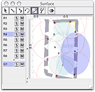 | surface frame : editing spatial configuration and trajectories. access from the window menu. |
| 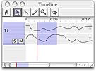 | timeline frame : time based view of the session, copying and pasting trajectories, selecting time spans. access from the window menu. |
| 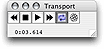 | transport palette : starting and stopping realtime playback, activating realtime plug-in. access from the window menu. |
| 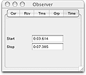 | observer palette : context sensitive view, editing session object information. access from the window menu. |
| 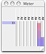 | meter frame : receiver sensitivity level meter. access from the window menu. |
| 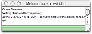 | main log pane : text message display. this window is always open, clicking in the close gadget will quit the application. |
| 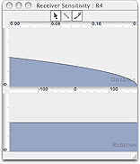 | receiver sensitivity editor : editing a receiver's sensitivity. accessed by doubling clicking on a receiver's anchor on the surface, using the pointer tool. |
| 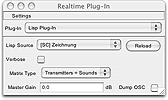 | realtime plug-in frame : choosing and configuring realtime synthesis plug-ins. access from the window menu. |
| 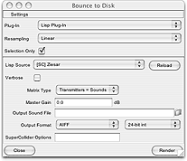 | bounce-to-disk dialog : offline synthesis of sound files. access from the file menu. |
| 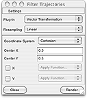 | filter trajectories dialog : transformation of transmitter trajectories. access from the timeline menu. |
| 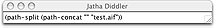 | jatha diddler : evaluating lisp expressions. access from the debug menu. |
| 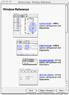 | help viewer : browsing the online help pages. access from the help menu. |